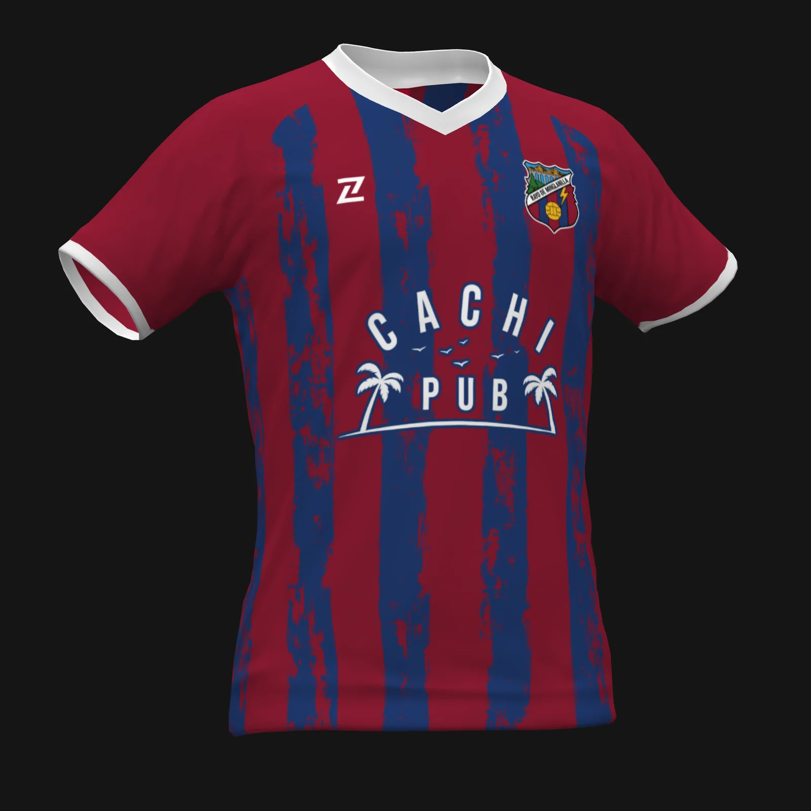
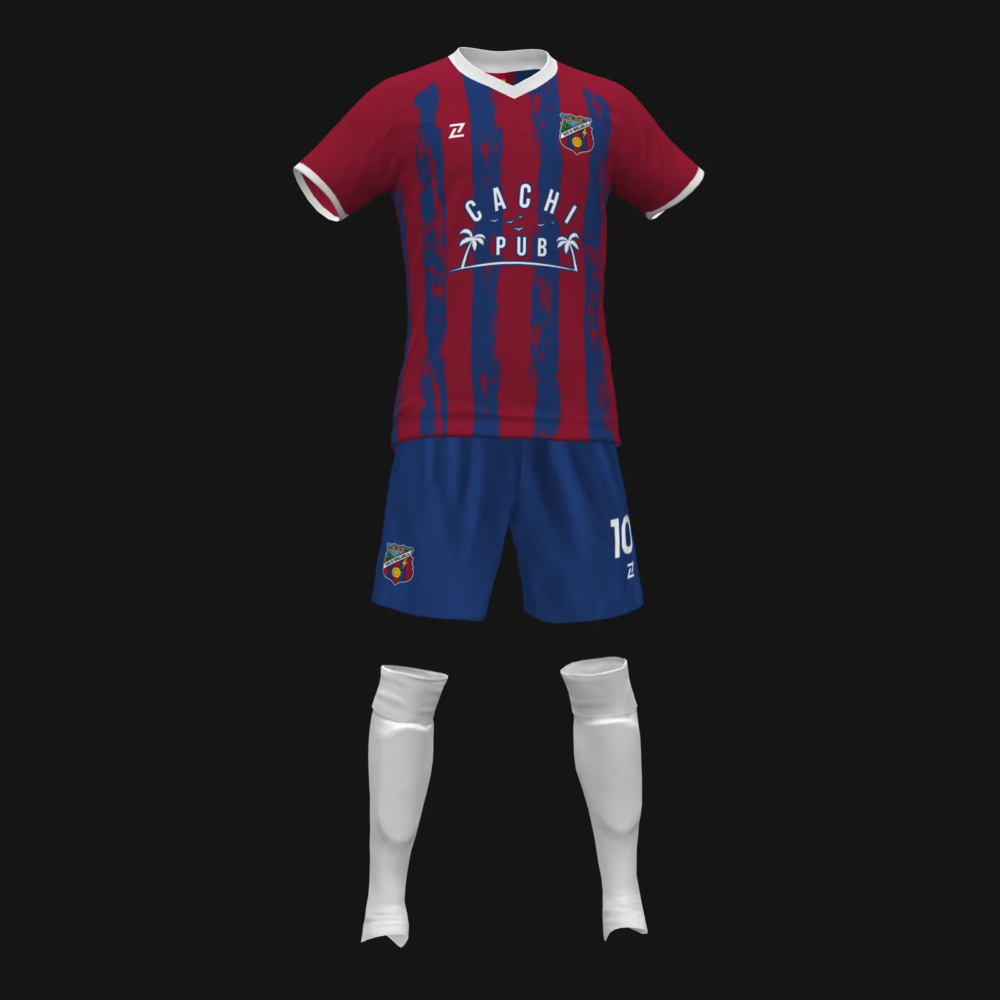
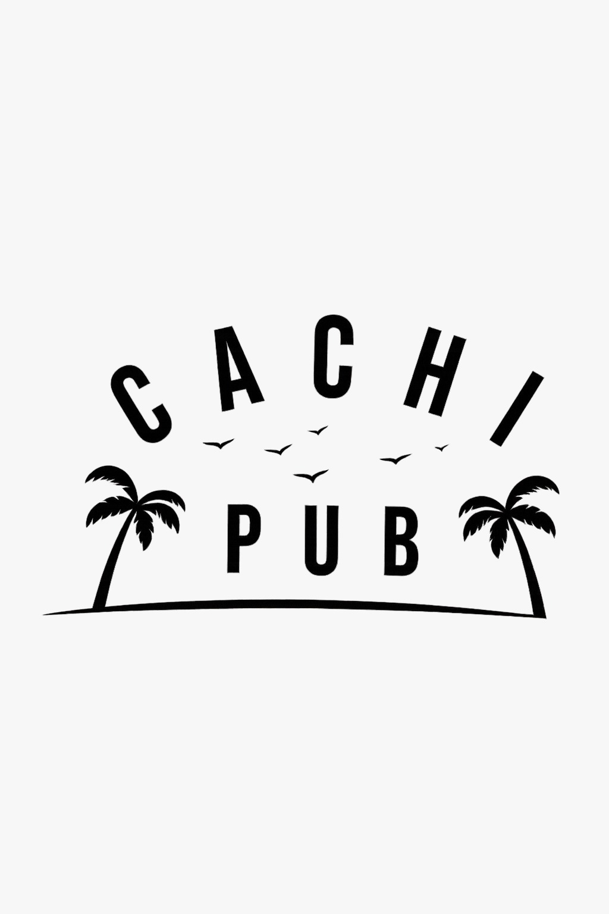
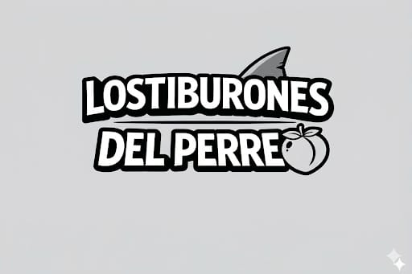
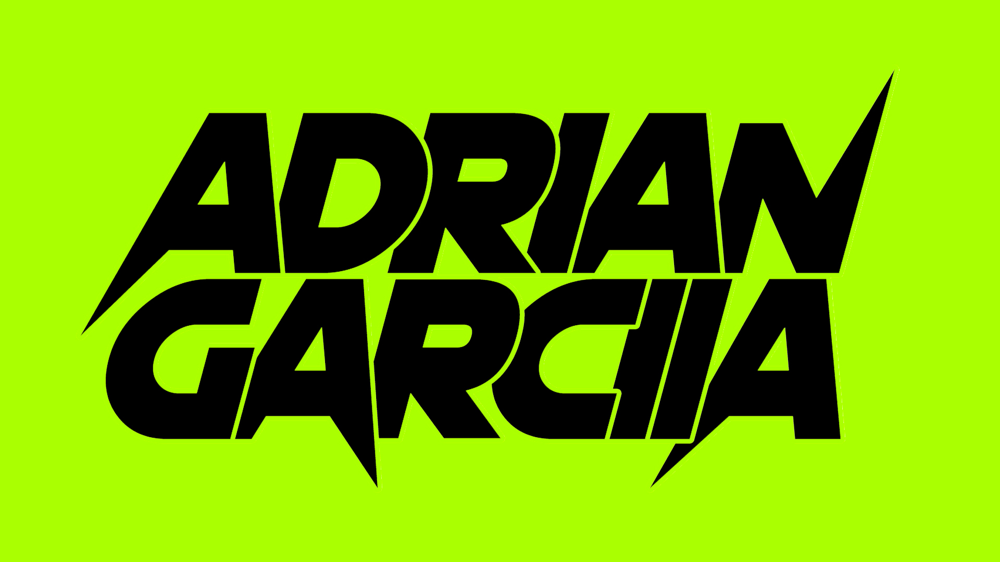

0
Días desde el ultimo baile a nuestros hijos.
Nuestra Plantilla
Próximamente
Cargando fichas de jugadores 2026...
Calendario
Próximo Encuentro
Rayo de Minglanilla | ...
Fuente del Recreo
Merchandising

Camiseta Oficial
Primera Equipación 2025/26

Pack Completo
Camiseta, pantalón y medias
Estadio
Fuente del Recreo
Minglanilla, Cuenca
"Donde el rival se olvida de jugar."
Nuestros Patrocinadores

CACHI PUB

TIBURONES DEL PERREO

ADRIAN GARCIA DJ
Crónicas de Partidos
Diccionario de la Superioridad
1. Pesquerazo: Celebrar el 1-2 en el minuto 85 para acabar hundido tras el 3-0 en penaltis.
2. Pinos: Lugar donde los jugadores de La Pesquera mandan los balones. Se recomienda ir con casco.
3. Justicia: Ganar un derbi incluso cuando el árbitro ignora un gol legal.
4. "El Muro": Sensación de pánico del rival al entrar en nuestro área.
5. Escozor: Sensación térmica en el pueblo vecino al ver este contador.
6. Turista Deportivo: Jugador rival que viene por puntos y se va con goles.
7. Mudez: Fenómeno en la grada visitante tras los penaltis.
8. ADN Rayo: Remontar cuando el rival ya está celebrando.
9. Ilusionismo: Creer que vas a salir vivo de Minglanilla.
10. Retrovisor: Donde nos ven en la clasificación.
Rumores de Mercado
N'Golo Kanté: En negociaciones
Visto en el bar del pueblo pidiendo unas bravas y una mediana. Los rumores dicen que le gusta el clima de Minglanilla.